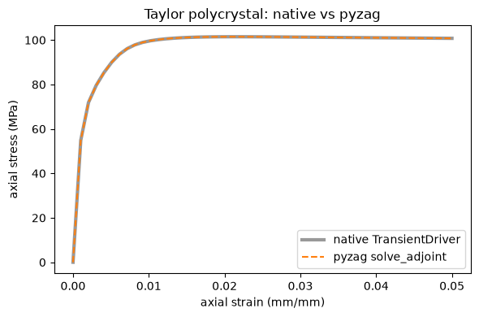
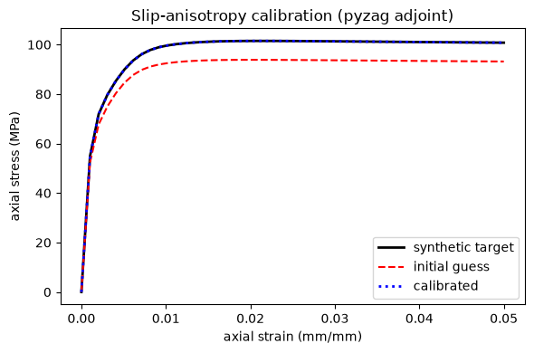
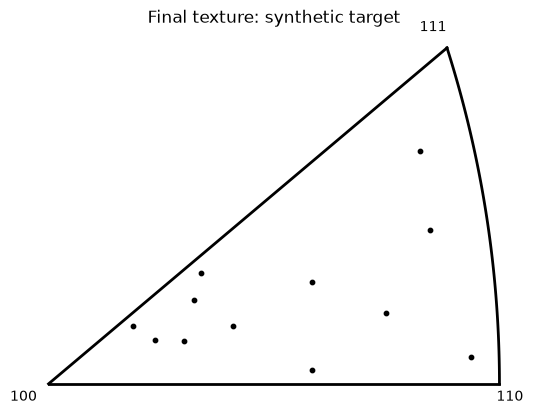
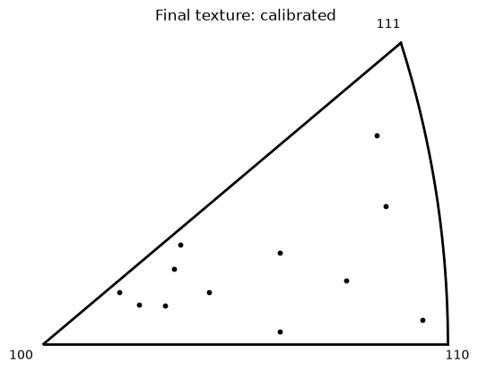

A Taylor polycrystal: calibrating slip anisotropy with reorientation#
This tutorial calibrates the slip-system anisotropy of a crystal-plasticity Taylor polycrystal from synthetic data, through the pyzag chunked adjoint:
The model — forest-dislocation hardening whose per-slip forest density is coupled across systems by a latent-hardening interaction matrix \(h\) (DislocationInteractionStrengthMap). Each grain also reorients (OrientationRate), so the macroscopic response and the final texture both carry information about \(h\).
Native vs pyzag — the same coupled step solved by the built-in
TransientDriverand by pyzag’ssolve_adjointagree to solver tolerance.Calibration — the latent-hardening ratio \(q\) of a block-structured interaction matrix (built with
fill = block: within-slip-family blocks \(=1\), cross-family blocks \(=q\)) is recovered from a synthetic experiment. The loss combines the macroscopic stress curve and the per-grain orientation trajectory at every time step — reorientation is what keeps the anisotropy well-conditioned.
Every grain integrates its own elastic strain, orientation, and per-slip
dislocation density while all grains share one global deformation-rate / stress
state — a BLOCK + DENSE system (per-grain block unknowns, global mixed-control
dense unknowns) solved with a Schur complement. The per-slip dislocation_density
adds a second sub-batch axis, so the coupled step folds grain × slip.
# When this notebook runs in Google Colab, install NEML2 from PyPI. The guard
# makes the cell a no-op everywhere else.
import sys
if "google.colab" in sys.modules:
!pip install -q neml2 pyzag
The material model#
A mixed-control Taylor crystal-plasticity model (FCC, {111}<110> slip): cubic
elasticity, a power-law slip rule, forest-dislocation hardening with a
slip-system interaction matrix, and backward-Euler integration of each grain’s
elastic strain, orientation, and per-slip dislocation density. The
interaction_matrix is built with the SquareMatrix [Tensors] type
using fill = block (the Franciosi picture: slip systems grouped into families,
one coefficient per family pair). The calibration replaces it in Python with a
block matrix whose within-family blocks are \(1\) and cross-family blocks are the
latent ratio \(q\), so a single physical coefficient is fit.
%%writefile model.i
# Mixed-control Taylor crystal plasticity with a slip-system interaction
# (latent-hardening) matrix. The calibrated quantity is the latent scalar q,
# injected in Python as a block matrix (within-family = 1, cross-family = q); the
# [Tensors] hmat below only sets the baseline that NEML2PyzagModel mirrors as a
# trainable parameter.
[Tensors]
[sdirs]
type = Python
expr = 'MillerIndex(torch.tensor([1, 1, 0], dtype=torch.int64))'
[]
[splanes]
type = Python
expr = 'MillerIndex(torch.tensor([1, 1, 1], dtype=torch.int64))'
[]
[hmat]
type = SquareMatrix
fill = block
blocks = '3 3 3 3' # 4 slip families of 3 (FCC {111}<110>)
data = '1 0 0 0 0 1 0 0 0 0 1 0 0 0 0 1' # baseline; Python sets the latent ratio
[]
[]
[Data]
[crystal_geometry]
type = CubicCrystal
lattice_parameter = 1
slip_directions = 'sdirs'
slip_planes = 'splanes'
[]
[]
[Models]
# Mixed control (global)
[mixed_control]
type = MixedControlSetup
x_above = 'deformation_rate'
x_below = 'target_cauchy_stress'
y = 'mixed_state'
[]
[y_constraint]
type = SR2LinearCombination
from = 'mixed_state prescribed'
to = 'y_residual'
weights = '1 -1'
[]
# Per-crystal update
[euler_rodrigues]
type = RotationMatrix
from = 'orientation'
to = 'orientation_matrix'
[]
[elastic_tensor]
type = CubicElasticityTensor
coefficient_types = 'YOUNGS_MODULUS POISSONS_RATIO SHEAR_MODULUS'
coefficients = '100000 0.307 11046.58'
[]
[elasticity]
type = GeneralElasticity
elastic_stiffness_tensor = 'elastic_tensor'
strain = 'elastic_strain'
stress = 'cauchy_stress'
[]
[resolved_shear]
type = ResolvedShear
stress = 'cauchy_stress'
[]
[elastic_stretch]
type = ElasticStrainRate
deformation_rate = 'deformation_rate'
[]
[plastic_spin]
type = PlasticVorticity
[]
[plastic_deformation_rate]
type = PlasticDeformationRate
[]
[orientation_rate]
type = OrientationRate
[]
[sum_slip_rates]
type = SumSlipRates
[]
[slip_rule]
type = PowerLawSlipRule
n = 8.0
gamma0 = 2.0e-1
[]
[slip_strength]
type = DislocationInteractionStrengthMap
dislocation_density = 'dislocation_density'
interaction_matrix = 'hmat'
alpha = 0.3
mu = 1.0e5
b = 1.0e-4
constant_strength = 50.0
[]
[dislocation_density_rate]
type = PerSlipForestDislocationEvolution
dislocation_density = 'dislocation_density'
k1 = 1e2
k2 = 40.0
[]
[integrate_dislocation_density]
type = ScalarBackwardEulerTimeIntegration
variable = 'dislocation_density'
[]
[integrate_elastic_strain]
type = SR2BackwardEulerTimeIntegration
variable = 'elastic_strain'
[]
[integrate_orientation]
type = WR2ImplicitExponentialTimeIntegration
variable = 'orientation'
[]
[per_crystal_update]
type = ComposedModel
models = 'elasticity euler_rodrigues
orientation_rate resolved_shear
elastic_stretch
plastic_deformation_rate plastic_spin
sum_slip_rates slip_rule slip_strength dislocation_density_rate
integrate_dislocation_density
integrate_elastic_strain
integrate_orientation'
additional_outputs = 'cauchy_stress'
[]
# Global constraint
[mean_stress]
type = SR2IntermediateMean
from = 'cauchy_stress'
to = 'mean_cauchy_stress'
reduces = 'grain'
[]
[match_mean_cauchy_stress]
type = SR2LinearCombination
from = 'target_cauchy_stress mean_cauchy_stress'
to = 'target_cauchy_stress_residual'
weights = '1 -1'
[]
[global_constraint]
type = ComposedModel
models = 'mean_stress match_mean_cauchy_stress'
[]
# Full implicit model
[implicit_model]
type = ComposedModel
models = 'mixed_control y_constraint per_crystal_update global_constraint'
[]
[]
[EquationSystems]
[eq_sys]
type = NonlinearSystem
model = 'implicit_model'
unknowns = 'elastic_strain orientation dislocation_density; deformation_rate target_cauchy_stress'
residuals = 'elastic_strain_residual orientation_residual dislocation_density_residual; y_residual target_cauchy_stress_residual'
structure = 'block dense'
[]
[]
[Solvers]
[newton]
type = NewtonWithLineSearch
max_linesearch_iterations = 5
linear_solver = 'schur'
[]
[lu]
type = DenseLU
[]
[schur]
type = SchurComplement
residual_primary_group = '0'
unknown_primary_group = '0'
primary_solver = 'lu'
schur_solver = 'lu'
[]
[]
[Models]
[predictor]
type = ConstantExtrapolationPredictor
unknowns_SR2 = 'elastic_strain deformation_rate target_cauchy_stress'
unknowns_MRP = 'orientation'
unknowns_Scalar = 'dislocation_density'
[]
[model_bare]
type = ImplicitUpdate
equation_system = 'eq_sys'
solver = 'newton'
predictor = 'predictor'
[]
[compute_mixed_state]
type = MixedControlSetup
x_above = 'deformation_rate'
x_below = 'target_cauchy_stress'
y = 'mixed_state'
[]
[model]
type = ComposedModel
models = 'model_bare compute_mixed_state'
additional_outputs = 'mixed_state'
[]
[]
Overwriting model.i
Setup#
Imports, the calibration configuration, and the reproducibility knobs. The
calibrated parameter is the mirrored interaction matrix; a torch.nn.utils
parametrization makes the scalar \(q\) its only free degree of freedom.
import matplotlib.pyplot as plt
import torch
from torch.nn.utils import parametrize
from pyzag import chunktime, nonlinear
import neml2
import neml2.types
import neml2.texture as texture
from neml2.pyzag import NEML2PyzagModel
torch.manual_seed(42)
torch.set_default_dtype(torch.float64)
device = torch.device("cuda" if torch.cuda.is_available() else "cpu")
torch.set_default_device(device)
# Kept small so the tutorial runs quickly; scale these up for real work.
NGRAINS = 12
NTIME = 50
NCHUNK = 5
N_ITER = 5
MAX_STRAIN = 0.05
RATE = 1.0e-3
AXIAL = 2 # axial component in the 6-vector Mandel state
NSLIP = 12 # FCC {111}<110> slip systems
STRIDE = 6 + 3 + NSLIP # per-grain state block: elastic_strain(6) + MRP(3) + dd(12)
INIT_RHO = 10.0 # initial per-slip dislocation density
# The interaction matrix is the calibrated parameter; a parametrization reduces it
# to one latent-hardening ratio q (within-family blocks = 1, cross-family = q).
CALIBRATION_PARAMS = ["slip_strength_interaction_matrix"]
BLOCKS = [3, 3, 3, 3] # slip-family partition for the block interaction matrix (sums to NSLIP)
Q_TRUTH = 0.4 # ground-truth latent-hardening ratio (cross-family coefficient)
Q_INIT = 0.1 # deliberately-wrong starting guess (>= 0 so the forest sum stays >= 0)
# Loss weights (each term is normalized by its target magnitude in the closure).
W_STRESS = 1.0
W_TEXTURE = 1.0
A synthetic experiment#
We draw random uniform-on-SO(3) grain orientations (as MRPs, the model’s orientation parametrization) and a constant-rate axial strain ramp.
def random_orientations(ngrains):
g = torch.randn(ngrains, 3, 3)
q, r = torch.linalg.qr(g)
q = q * torch.sign(torch.diagonal(r, dim1=-2, dim2=-1)).unsqueeze(-2)
q[:, :, 0] = q[:, :, 0] * torch.linalg.det(q).unsqueeze(-1)
return neml2.types.MRP.from_matrix(neml2.types.R2(q, 1))
def strain_time_grid(max_strain, ntime, rate):
strain = torch.linspace(0.0, max_strain, ntime)
return strain, strain / rate
orientations = random_orientations(NGRAINS)
strain, times = strain_time_grid(MAX_STRAIN, NTIME, RATE)
Wrap the model for pyzag, with \(q\) as the only free parameter#
NEML2PyzagModel mirrors the interaction_matrix as a trainable
torch.nn.Parameter of shape (NSLIP, NSLIP). We then register a torch.nn.utils
parametrization so the matrix is computed from a single latent-hardening ratio
q: within-family blocks are \(1\) (self + coplanar systems) and cross-family blocks
are \(q\). The optimizer only ever sees q — low-dimensional and well-posed, and
(with q >= 0) the forest sum stays non-negative so the \(\sqrt{\cdot}\) is real.
Normalizing the self-block to \(1\) is the standard latent-hardening convention (two
free block coefficients are degenerate when the dislocation density is nearly
uniform across systems). neml2.compile JIT-compiles the residual/Jacobian in
place.
class BlockLatent(torch.nn.Module):
# Latent ratio q -> (NSLIP, NSLIP): within-family blocks = 1 (self + coplanar),
# cross-family blocks = q. The ``fill = block`` structure, as a function of q.
def __init__(self, blocks, q_init):
super().__init__()
self.register_buffer("blocks_t", torch.tensor(blocks))
self.register_buffer("eye", torch.eye(len(blocks)))
self.q_init = q_init
def forward(self, q):
coeffs = self.eye + q * (1.0 - self.eye) # per-family-pair coefficients
return coeffs.repeat_interleave(self.blocks_t, 0).repeat_interleave(self.blocks_t, 1)
def right_inverse(self, h):
# Sets the stored scalar when the parametrization is registered.
return torch.tensor(float(self.q_init))
nsys = neml2.load_nonlinear_system("model.i", "eq_sys")
model = NEML2PyzagModel(nsys, include_parameters=CALIBRATION_PARAMS)
# q starts at the ground truth; the native run below is compared at this same q.
parametrize.register_parametrization(
model, "slip_strength_interaction_matrix", BlockLatent(BLOCKS, Q_TRUTH)
)
q_param = model.parametrizations.slip_strength_interaction_matrix.original
neml2.compile(model)
ParametrizedNEML2PyzagModel(
(parametrizations): ModuleDict(
(slip_strength_interaction_matrix): ParametrizationList(
(0): BlockLatent()
)
)
)
The differentiable module#
A thin torch.nn.Module that assembles the initial state and the per-step driving
forces once, then returns both the macroscopic axial stress trajectory and the
per-grain orientation at every time step (the reorientation history).
forward differentiates through the chunked solve with nonlinear.solve_adjoint.
Orientation is read from the grain-major state vector — each grain’s block is
[elastic_strain(6), orientation(3), dislocation_density(NSLIP)] — at all steps.
class CrystalCalibration(torch.nn.Module):
def __init__(self, model, orientations, strain, times, nchunk):
super().__init__()
self.model = model
self.nchunk = nchunk
self.orientations = orientations
self.register_buffer("strain", strain)
ngrains = orientations.shape[0]
ntime = strain.shape[0]
dtype = orientations.dtype
nbatch = 1
ic = {
"elastic_strain": torch.zeros(nbatch, ngrains, 6, dtype=dtype),
"orientation": orientations.dynamic_batch.unsqueeze(0),
"dislocation_density": torch.full((nbatch, ngrains, NSLIP), INIT_RHO, dtype=dtype),
"deformation_rate": torch.zeros(nbatch, 6, dtype=dtype),
"target_cauchy_stress": torch.zeros(nbatch, 6, dtype=dtype),
}
self._y0 = model.assemble_state(ic, dynamic_dim=1)
self._ngrains = ngrains
control = torch.zeros(ntime, nbatch, 6, dtype=dtype)
control[..., AXIAL] = 1.0
prescribed = torch.zeros(ntime, nbatch, 6, dtype=dtype)
prescribed[..., AXIAL] = RATE
forces = {
"control": control,
"prescribed": prescribed,
"t": times.reshape(ntime, 1).expand(ntime, nbatch).contiguous(),
"vorticity": torch.zeros(ntime, nbatch, 3, dtype=dtype),
}
self._forces = model.assemble_forces(forces, dynamic_dim=2)
self._ntime = ntime
@property
def calibration_parameters(self):
return [self.model.parametrizations.slip_strength_interaction_matrix.original]
def _solver(self, direct_solve_operator):
return nonlinear.RecursiveNonlinearEquationSolver(
self.model,
step_generator=nonlinear.StepGenerator(self.nchunk),
predictor=nonlinear.PreviousStepsPredictor(),
direct_solve_operator=direct_solve_operator,
nonlinear_solver=chunktime.ChunkNewtonRaphsonLineSearch(
rtol=1e-6, atol=1e-8, linesearch_iter=5
),
)
def forward(self, direct_solve_operator=chunktime.BidiagonalThomasFactorization):
solver = self._solver(direct_solve_operator)
traj = nonlinear.solve_adjoint(solver, self._y0, self._ntime, self._forces)
macro_stress = traj[..., -6 + AXIAL].squeeze(-1)
# Grain-major state; per-grain orientation (MRP) at [6:9], at EVERY step.
ng = self._ngrains
ori_traj = traj[..., : ng * STRIDE].reshape(*traj.shape[:-1], ng, STRIDE)[..., 6:9]
return macro_stress, ori_traj
module = CrystalCalibration(model, orientations, strain, times, NCHUNK).to(device)
Run it natively#
Before differentiating anything, drive the same model (at \(h = I\), i.e. \(q=0\))
through the built-in TransientDriver, reusing the very orientations the pyzag
module holds, so the two runs are directly comparable.
ori_literal = repr(orientations.data.detach().cpu().tolist())
_shared_models = "[Models]" + open("model.i").read().split("[Models]", 1)[1]
# native interaction matrix = the block matrix at the ground-truth latent ratio,
# matching the pyzag h we compare against.
_nb = len(BLOCKS)
block_data = " ".join("1" if i == j else repr(Q_TRUTH) for i in range(_nb) for j in range(_nb))
native_input = (
f"""
[Tensors]
[sdirs]
type = Python
expr = 'MillerIndex(torch.tensor([1, 1, 0], dtype=torch.int64))'
[]
[splanes]
type = Python
expr = 'MillerIndex(torch.tensor([1, 1, 1], dtype=torch.int64))'
[]
[hmat]
type = SquareMatrix
fill = block
blocks = '3 3 3 3'
data = '{block_data}'
[]
[times]
type = Python
expr = 'Scalar(torch.linspace(0.0, {MAX_STRAIN / RATE}, {NTIME}, dtype=torch.float64).reshape({NTIME}, 1))'
[]
[control]
type = Python
expr = 'SR2.fill(0.0, 0.0, 1.0, 0.0, 0.0, 0.0).dynamic_batch.expand({NTIME}, 1)'
[]
[prescribed]
type = Python
expr = 'SR2.fill(0.0, 0.0, {RATE}, 0.0, 0.0, 0.0).dynamic_batch.expand({NTIME}, 1)'
[]
[vorticity]
type = Python
expr = 'WR2(torch.zeros({NTIME}, 1, 3, dtype=torch.float64))'
[]
[initial_orientation]
type = Python
expr = 'MRP(torch.tensor({ori_literal}, dtype=torch.float64), sub_batch_ndim=1).sub_batch.retag(1)'
[]
[initial_elastic_strain]
type = Python
expr = 'SR2(torch.zeros({NGRAINS}, 6, dtype=torch.float64), sub_batch_ndim=1).sub_batch.retag(1)'
[]
[initial_dislocation_density]
type = Python
expr = 'Scalar(torch.full(({NGRAINS}, {NSLIP}), {INIT_RHO}, dtype=torch.float64), sub_batch_ndim=2).sub_batch.retag(2)'
[]
[]
[Data]
[crystal_geometry]
type = CubicCrystal
lattice_parameter = 1
slip_directions = 'sdirs'
slip_planes = 'splanes'
[]
[]
[Drivers]
[driver]
type = TransientDriver
model = 'model'
prescribed_time = 'times'
prescribed_SR2_names = 'prescribed control'
prescribed_SR2_values = 'prescribed control'
prescribed_WR2_names = 'vorticity'
prescribed_WR2_values = 'vorticity'
ic_MRP_names = 'orientation'
ic_MRP_values = 'initial_orientation'
ic_SR2_names = 'elastic_strain'
ic_SR2_values = 'initial_elastic_strain'
ic_Scalar_names = 'dislocation_density'
ic_Scalar_values = 'initial_dislocation_density'
[]
[]
"""
+ _shared_models
)
with open("model_native.i", "w") as fh:
fh.write(native_input)
driver = neml2.load_input("model_native.i").get_driver("driver")
driver.run()
res = driver.result()
nsteps = driver.nsteps
native_stress = torch.tensor(
[0.0] + [res[f"output.{i}.z"][..., AXIAL].reshape(-1)[0].item() for i in range(1, nsteps)],
device=device,
)
print(f"native run: {nsteps} steps, peak axial stress = {native_stress.max().item():.2f} MPa")
native run: 50 steps, peak axial stress = 101.48 MPa
Same model via pyzag, and compare#
At the same block interaction matrix, the pyzag solve_adjoint path reproduces the
native implicit driver to solver tolerance — two routes to the same equations.
with torch.no_grad():
q_param.data.fill_(Q_TRUTH)
model._update_parameter_values()
pyzag_stress, _ = module()
max_diff = (native_stress - pyzag_stress).abs().max().item()
rel = max_diff / pyzag_stress.abs().max().item()
print(f"max |native - pyzag| = {max_diff:.3e} MPa (relative {rel:.2e})")
assert rel < 1e-4, "native and pyzag macroscopic responses should agree to solver tolerance"
s = strain.detach().cpu().numpy()
fig, ax = plt.subplots(figsize=(6, 4))
ax.plot(
s, native_stress.detach().cpu().numpy(), "k-", lw=3, alpha=0.4, label="native TransientDriver"
)
ax.plot(s, pyzag_stress.detach().cpu().numpy(), "C1--", lw=1.5, label="pyzag solve_adjoint")
ax.set_xlabel("axial strain (mm/mm)")
ax.set_ylabel("axial stress (MPa)")
ax.set_title("Taylor polycrystal: native vs pyzag")
ax.legend()
fig.tight_layout()
/home/tranh/.claude_tmp/ipykernel_470980/3744906335.py:41: UserWarning: pyzag lowered torch._functorch.config.donated_buffer's default to False process-wide. AOTAutograd 'donated buffers' (torch>=2.12) are incompatible with pyzag's retain_graph=True adjoint over torch.compile'd models, which otherwise raises 'compiled with non-empty donated buffers'. To keep donated buffers enabled, restore torch._functorch.config._config['donated_buffer'].default = True -- compiled models differentiated through the adjoint will then error.
return nonlinear.RecursiveNonlinearEquationSolver(
W1008 12:37:52.149000 470980 site-packages/torch/utils/cpp_extension.py:140] [1/0] No CUDA runtime is found, using CUDA_HOME='/usr'
max |native - pyzag| = 5.453e-06 MPa (relative 5.37e-08)

Ground truth and a perturbed start#
We set the latent-hardening scalar to its ground-truth value and record the synthetic experiment — the macroscopic stress curve and the final per-grain texture. Then we move \(q\) to a deliberately-wrong starting guess.
with torch.no_grad():
q_param.data.fill_(Q_TRUTH)
model._update_parameter_values()
target_stress, target_texture = module()
with torch.no_grad():
q_param.data.fill_(Q_INIT)
model._update_parameter_values()
init_stress, init_texture = module()
print(f"truth q = {Q_TRUTH:.3f}")
print(f"start q = {float(q_param):.3f}")
truth q = 0.400
start q = 0.100
/home/tranh/miniconda3/envs/moose-src/lib/python3.13/site-packages/torch/utils/_device.py:122: UserWarning: Converting a tensor with requires_grad=True to a scalar may lead to unexpected behavior.
Consider using tensor.detach() first. (Triggered internally at /pytorch/torch/csrc/autograd/generated/python_variable_methods.cpp:838.)
return func(*args, **kwargs)
Calibrate through the chunked adjoint#
We minimize a combined loss: the macroscopic stress mismatch and the
final-texture mismatch, each normalized by its target magnitude. The stress term
carries most of \(q\)’s identifiability; the orientation-trajectory term (every grain
at every step) is a physically meaningful constraint that reorientation makes
available. Each closure call backpropagates through the chunked adjoint, so peak
memory scales with the chunk size, not the full time history.
optimizer = torch.optim.LBFGS(
module.calibration_parameters, lr=0.3, max_iter=20, line_search_fn="strong_wolfe"
)
history = []
s_scale = float((target_stress**2).mean())
t_scale = float((target_texture**2).mean())
def closure():
optimizer.zero_grad()
stress, tex = module()
loss = (
W_STRESS * ((stress - target_stress) ** 2).mean() / s_scale
+ W_TEXTURE * ((tex - target_texture) ** 2).mean() / t_scale
)
loss.backward()
return loss
for it in range(N_ITER):
loss = float(optimizer.step(closure).detach())
history.append(loss)
print(f"iter {it + 1:2d} loss = {loss:.6e} q = {float(q_param):.4f}")
with torch.no_grad():
final_stress, final_texture = module()
q_recovered = float(q_param)
assert history[-1] < history[0]
iter 1 loss = 5.405515e-03 q = 0.3995
iter 2 loss = 1.007015e-08 q = 0.3999
iter 3 loss = 5.812645e-10 q = 0.3999
iter 4 loss = 2.848540e-10 q = 0.3999
iter 5 loss = 2.848540e-10 q = 0.3999
Results#
The loss drops by orders of magnitude, the latent-hardening ratio returns to the ground truth, and both the calibrated stress–strain curve and the orientation history land back on the synthetic target. The inverse pole figures compare the recovered final texture against the truth.
print(f"loss {history[0]:.3e} -> {history[-1]:.3e}")
print(f"q: truth = {Q_TRUTH:.4f} recovered = {q_recovered:.4f}")
s = strain.detach().cpu().numpy()
fig, ax = plt.subplots(figsize=(6, 4))
ax.plot(s, target_stress.detach().cpu().numpy(), "k-", lw=2, label="synthetic target")
ax.plot(s, init_stress.detach().cpu().numpy(), "r--", label="initial guess")
ax.plot(s, final_stress.detach().cpu().numpy(), "b:", lw=2, label="calibrated")
ax.set_xlabel("axial strain (mm/mm)")
ax.set_ylabel("axial stress (MPa)")
ax.set_title("Slip-anisotropy calibration (pyzag adjoint)")
ax.legend()
fig.tight_layout()
# Final-texture comparison: inverse pole figures (loading direction).
loading = torch.tensor([0.0, 0.0, 1.0], device=device)
tgt = neml2.types.MRP(target_texture[-1].reshape(-1, 3)) # final-step texture
cal = neml2.types.MRP(final_texture[-1].reshape(-1, 3))
texture.pretty_plot_inverse_pole_figure(tgt, loading, crystal_symmetry="432")
plt.title("Final texture: synthetic target")
texture.pretty_plot_inverse_pole_figure(cal, loading, crystal_symmetry="432")
plt.title("Final texture: calibrated")
loss 5.406e-03 -> 2.849e-10
q: truth = 0.4000 recovered = 0.3999
Text(0.5, 1.0, 'Final texture: calibrated')



Where to go next#
The scalar-viscoplastic versions of this calibration workflow are the deterministic and statistical notebooks.
To run a slip-anisotropy model and compare ways of specifying the interaction matrix (diagonal, block, dense), see the crystal-plasticity module’s slip-anisotropy example.
The pyzag tutorial explains why the chunked adjoint is needed for time-history calibration.